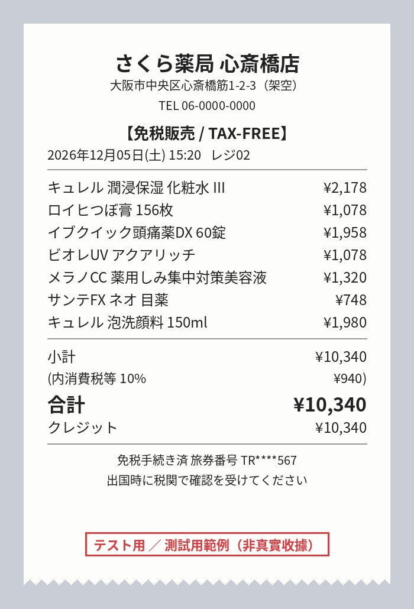
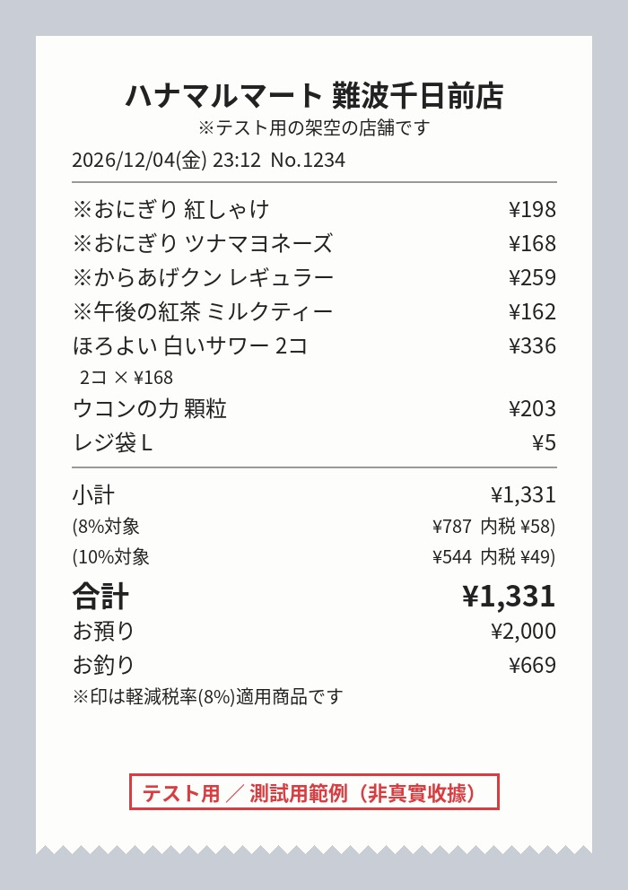
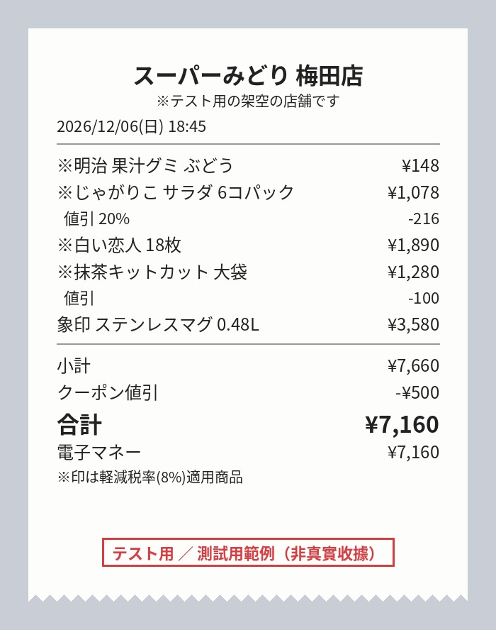
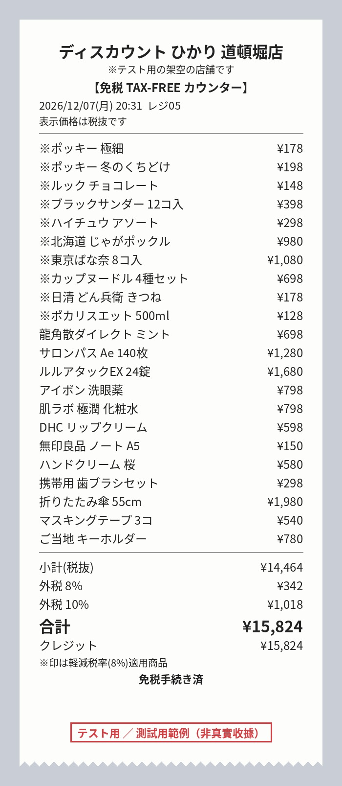

JaScan 測試用收據
把這頁開在電腦螢幕上，用手機的 JaScan 對著螢幕拍，再對照下面的「正確答案」。這些都是虛構店家的範例，不是真實收據。

1. 藥妝店（免稅）
測：退稅判斷- 7 個品項，全部 10%
- 合計 ¥10,340
- 退稅應顯示「可退稅」，預估約 ¥940

2. 便利商店（8%／10% 混合）
測：稅率、數量行- 7 個品項：前 4 個 8%（有 ※），其餘 10%
- 「2コ × ¥168」要算在 ほろよい 上，金額 ¥336
- 不該出現：小計、内税、お預り、お釣り
- 合計 ¥1,331，退稅「不適用」

3. 超市（單品折扣＋折價券）
測：兩種折扣- 5 個品項
- 單品折扣：じゃがりこ −¥216、キットカット −¥100（只算在該品項）
- 整張折價券 −¥500（依每人金額比例分攤）
- 合計 ¥7,160；沒有免稅字樣但金額達標 →「可能可退」

4. 長收據（外稅、免稅）
測：分段拍、外稅- 請分 2–3 段拍，每段稍微重疊
- 22 個品項，重疊的部分不能重複出現
- 金額是未稅價：外税 8% ¥342、外税 10% ¥1,018 應出現在「折價券／折扣／服務費」區，算加收
- 合計 ¥15,824，退稅「可退稅」